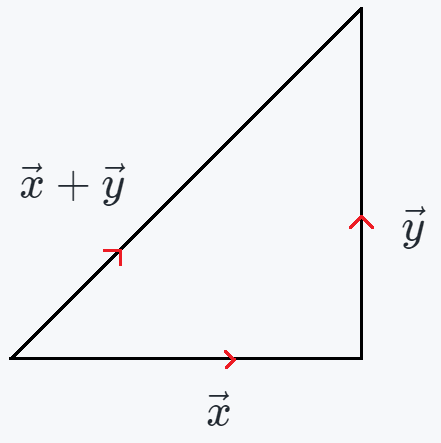

Orthogonal Subspaces
Recall our \(4\) fundamental subspaces that are,
Orthogonal Vector
Orthogonal means perpendicular, say we have two \(n\) dimensional vectors,\(\vec{v}= \begin{bmatrix} v_1\\v_1\\\vdots\\v_n\\ \end{bmatrix} \in\mathbb{R}^n\) and \(\vec{w}= \begin{bmatrix} w_1\\w_1\\\vdots\\w_n\\ \end{bmatrix} \in\mathbb{R}^n\) then they are orthogonal if,
\[\vec{v}\cdot \vec{w}=0\] OR \[\vec{v}^T \vec{w}=0\]
\(\vec{0}\) is orthogonal to every vector.
Pythagoras right angles triangle
Say we have two \(n\) dimensional vectors \(\vec{x}= \begin{bmatrix} x_1\\x_1\\\vdots\\x_n\\ \end{bmatrix} \in\mathbb{R}^n\) and \(\vec{y}= \begin{bmatrix} y_1\\y_1\\\vdots\\y_n\\ \end{bmatrix} \in\mathbb{R}^n\)  then the vectors \(\vec{x}, \vec{y}, \vec{x}+\vec{y}\) form a right angles triangle if, \(\vec{x}\) and \(\vec{y}\) are orthogonal IF.
\[\vec{x}^T \vec{y}=0\] According to Pythagorean theorem,
\( \|\vec{x}\|^2 + \|\vec{y}^2\| =\|\vec{x}+\vec{y}\|^2;\quad\)\(\color{red}{\text{if }\vec{x} \text{ and } \vec{y} \text{ are orthogonal}}\)
\(\Rightarrow \vec{x}^T\vec{x} + \vec{y}^T\vec{y} =(\vec{x}^T+\vec{y}^T)(\vec{x}+\vec{y})\)
\(\Rightarrow \vec{x}^T\vec{x} + \vec{y}^T\vec{y} = \vec{x}^T\vec{x} + \vec{x}^T\vec{y} + \vec{y}^T\vec{x} + \vec{y}^T\vec{y} \)
\(\Rightarrow \vec{x}^T\vec{x} + \vec{y}^T\vec{y} = \vec{x}^T\vec{x} + \vec{x}^T\vec{y} + \vec{y}^T\vec{x} + \vec{y}^T\vec{y} \)
\(\Rightarrow \vec{x}\cdot\vec{y} + \vec{y}\cdot\vec{x} =0 \)
\(\Rightarrow \vec{x}^T\vec{y} =0\)
\[\Rightarrow \color{blue}{\vec{x}^T\vec{y} =0};\quad \color{red}{\text{if }\vec{x} \text{ and } \vec{y} \text{ are orthogonal}}\]
Orthogonal Subspaces
We do understand orthogonal vectors, but what are orthogonal subspaces.What is it meant for two subspaces to be orthogonal?
Let's consider two subspaces \(\mathbb{S}\) and \(\mathbb{U}\).
\(\mathbb{S}\) and \(\mathbb{U}\) are orthogonal if,
Every vectors in \(\mathbb{S}\) is orthogonal to every vectors in \(\mathbb{U}\).
Example,
For a 3-Dimensional space are X-Y plane and X-Z plane orthogonal?
NO, consider two vectors,
\(\vec{x}_{XY}= \begin{bmatrix} 1\\1\\0\\ \end{bmatrix} \in\mathbb{R}^n\), \(\vec{y}_{YZ}= \begin{bmatrix} 0\\1\\1\\ \end{bmatrix} \in\mathbb{R}^n\)
and \(\vec{x}_{XY}\cdot\vec{y}_{YZ}\neq 0\) so they are not orthogonal to each other.
If two subspaces meet on some vector then they are not orthogonal, except \(\vec{0}\).
Row space is orthogonal to null space
Say that we have a \(m\times n\) matrix \(A\), then,All vectors say \(\vec{x}\) is in the null space if \(A\vec{x}=\vec{0}\)
This tells us that \(\vec{x}\) is orthogonal to all row vectors.
Let's denote the ith row as \(r_i\).We said that \(\vec{x}\in N(A)\) is orthogonal to all row vectors.
\(A=\begin{bmatrix} \cdots r_1 \cdots\\ \cdots r_2 \cdots\\ \vdots\\ \cdots r_m \cdots\\ \end{bmatrix}\quad\) so,
\(A\vec{x}=0\equiv\begin{bmatrix} \cdots r_1 \cdots\\ \cdots r_2 \cdots\\ \vdots\\ \cdots r_m \cdots\\ \end{bmatrix} \begin{bmatrix} x_1\\x_2\\\vdots \\ x_n\\ \end{bmatrix} = \begin{bmatrix} 0\\0\\\vdots \\ 0\\ \end{bmatrix}\)
\(\Rightarrow \begin{bmatrix} r_1^T x\\r_2^T x\\\vdots \\ r_m^T x\\ \end{bmatrix} = \begin{bmatrix} 0\\0\\\vdots \\ 0\\ \end{bmatrix}\)
\(\Rightarrow r_i^Tx=0;\quad \forall\ i=\{1,2,\cdots,m\}\)
So x is orthogonal to all row vectors.
But this doesn't mean that null space is orthogonal to the row space.
For that we need to check for all of the linear combinations of row vectors.
If all of the linear combinations of row vectors are orthogonal to \(\vec{x}\in N(A)\), then we can say that Row space is orthogonal to Null space.
We discovered that \(r_i^Tx=0;\quad \forall\ i=\{1,2,\cdots,m\}\)
\(\Rightarrow c_ir_i^Tx=0;\quad \forall\ i=\{1,2,\cdots,m\}\) and \(c_i\in\mathbb{R}\)
so any combination of \(c_ir_i^Tx=0\).
So we can see that linear combinations of row vectors are orthogonal to \(\vec{x}\in N(A)\).
Now we can say that Row space is orthogonal to Null space.
Column space is orthogonal to left null space
Say that we have a \(m\times n\) matrix \(A\), then,All vectors say \(\vec{x}\) is in the left null space if \(A^T\vec{x}=\vec{0}\)
This tells us that \(\vec{x}\) is orthogonal to all column vectors.
Let's denote the ith column as \(c_i\).We said that \(\vec{x}\in N(A^T)\) is orthogonal to all column vectors.
\(A=\begin{bmatrix} \vdots & \vdots & & \vdots \\ c_1 & c_2 & \cdots & c_n \\ \vdots & \vdots & & \vdots \\ \end{bmatrix}\quad\) so,
\(A^T\vec{x}=0\equiv\begin{bmatrix} \cdots c_1 \cdots\\ \cdots c_2 \cdots\\ \vdots\\ \cdots c_n \cdots\\ \end{bmatrix} \begin{bmatrix} x_1\\x_2\\\vdots \\ x_m\\ \end{bmatrix} = \begin{bmatrix} 0\\0\\\vdots \\ 0\\ \end{bmatrix}\)
\(\Rightarrow \begin{bmatrix} c_1^T x\\c_2^T x\\\vdots \\ c_n^T x\\ \end{bmatrix} = \begin{bmatrix} 0\\0\\\vdots \\ 0\\ \end{bmatrix}\)
\(\Rightarrow c_i^Tx=0;\quad \forall\ i=\{1,2,\cdots,n\}\)
So x is orthogonal to all column vectors of \(A\).
But this doesn't mean that left null space is orthogonal to the column space.
For that we need to check for all of the linear combinations of column vectors.
If all of the linear combinations of column vectors are orthogonal to \(\vec{x}\in N(A^T)\), then we can say that column space is orthogonal to left null space.
We discovered that \(\Rightarrow c_i^Tx=0;\quad \forall\ i=\{1,2,\cdots,n\}\)
\(\Rightarrow \alpha_ic_i^Tx=0;\quad \forall\ i=\{1,2,\cdots,n\}\) and \(\alpha_i\in\mathbb{R}\)
so any combination of \(\alpha_ic_i^Tx=0\).
So we can see that linear combinations of column vectors are orthogonal to \(\vec{x}\in N(A^T)\).
Now we can say that Column space is orthogonal to Left null space.
Join our Slack discussion forum